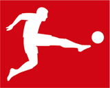
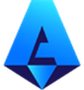

EPL
라리가

분데스리가
세리에A 리그앙
챔피언스리그
순위표 불러오는 중...
2026-27 시즌 순위 예측현재 승점에서 출발해 남은 경기를 AI 예측 모델 확률로 수천 번 돌려본 결과(몬테카를로 시뮬레이션)
시뮬레이션 횟수
불러오는 중...
EPL
라리가
분데스리가
세리에A
리그앙
챔피언스리그
일정 불러오는 중...
선수 순위이번 시즌 득점·도움 순위 · 매일 새벽 자동 갱신
내 팀즐겨찾는 팀(최대 5팀)의 순위와 다음 경기 AI 예측
선수 검색이번 시즌 5대 리그 선수 · 누르면 선수 카드
승부차기골키퍼와 키커 순서를 정하고 실제 규칙(5명 교대 · 조기 확정 · 서든데스)으로 겨뤄요
오늘의 경기
팀 선택
▼
✕
EPL
라리가
분데스
세리에A
리그앙
UCL
팀 선택
▼
✕
EPL
라리가
분데스
세리에A
리그앙
UCL
예측 결과
VS
예측 근거 (이 예측에서 크게 반영된 요인 순)
팀 비교
예상 스코어 (AI 추정·참고용)
- : -
다른 경기도 예측해보기
홈팀 최근 경기
역대 맞대결 기록
-
홈팀 승
-
무승부
-
원정팀 승
원정팀 최근 경기